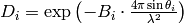
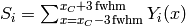

ComputeCalibrationCoefVan dialog.
Table of Contents
| Name | Direction | Type | Default | Description |
|---|---|---|---|---|
| VanadiumWorkspace | Input | MatrixWorkspace | Mandatory | Input Vanadium workspace |
| EPPTable | Input | TableWorkspace | Mandatory | Input EPP table. May be produced by FindEPP algorithm. |
| OutputWorkspace | Output | MatrixWorkspace | Mandatory | Name the workspace that will contain the calibration coefficients |
Algorithm creates a workspace with detector sensitivity correction coefficients using the given Vanadium workspace. The correction coefficients are calculated as follows.
Calculate the Debye-Waller factor according to Sears and Shelley Acta Cryst. A 47, 441 (1991):


where  if
if  , otherwise
, otherwise

where  is the ratio of the temperature during the experiment
is the ratio of the temperature during the experiment  to the Debye temperature
to the Debye temperature  ,
,  is the Vanadium atomic mass (in kg) and
is the Vanadium atomic mass (in kg) and  is the polar angle of the i-th detector.
is the polar angle of the i-th detector.
Warning
If sample log temperature is not present in the given Vanadium workspace or temperature is set to an invalid value, T=293K will be taken for the Debye-Waller factor calculation. Algorithm will produce warning in this case.
Load the peak centre and sigma from the EPPTable. These values are used to calculate sum  as
as

where  is the peak centre position and
is the peak centre position and  is the coresponding to
is the coresponding to 
 value for i-th detector.
value for i-th detector.
Finally, the correction coefficients  are calculated as
are calculated as

Workspace containing these correction coefficients is created as an output and can be used as a RHS workspace in Divide v1 to apply correction to the LHS workspace.
The valid input workspace:
Restrictions for EPPTable:
Note
The input EPPTable can be produced using the FindEPP v1 algorithm.
Example
# load Vanadium data
wsVana = LoadMLZ(Filename='TOFTOFTestdata.nxs')
# find elastic peak positions
epptable = FindEPP(wsVana)
# calculate correction coefficients
wsCoefs = ComputeCalibrationCoefVan(wsVana, epptable)
print 'Spectrum 4 of the output workspace is filled with: ', round(wsCoefs.readY(999)[0])
# wsCoefs can be used as rhs with Divide algorithm to apply correction to the data
wsCorr = wsVana/wsCoefs
print 'Spectrum 4 of the input workspace is filled with: ', round(wsVana.readY(999)[0], 1)
print 'Spectrum 4 of the corrected workspace is filled with: ', round(wsCorr.readY(999)[0], 5)
Output:
Spectrum 4 of the output workspace is filled with: 6596.0
Spectrum 4 of the input workspace is filled with: 1.0
Spectrum 4 of the corrected workspace is filled with: 0.00015
Categories: Algorithms | CorrectionFunctions\EfficiencyCorrections
Python: ComputeCalibrationCoefVan.py